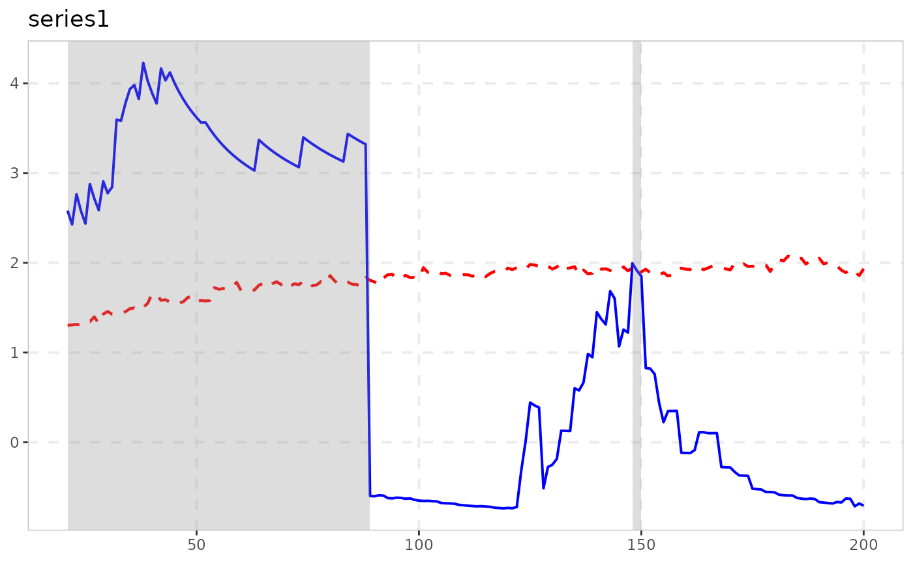
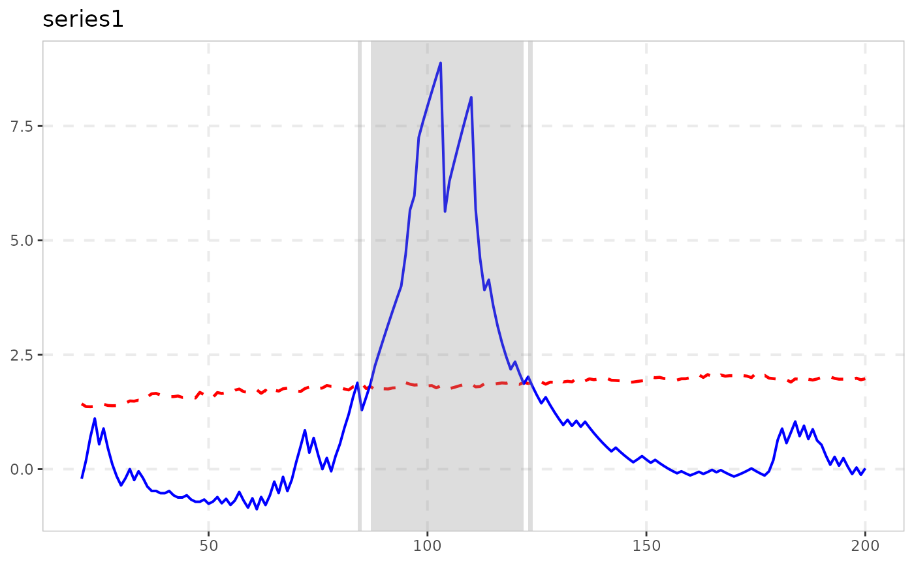
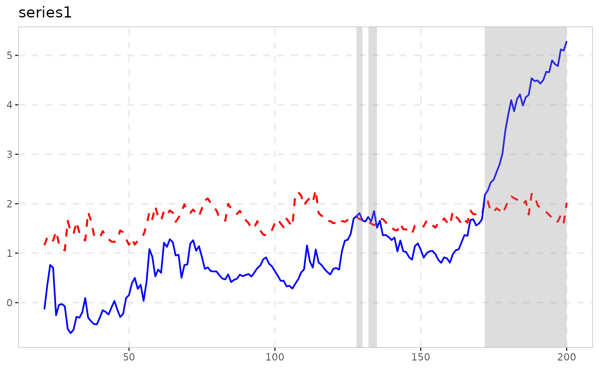
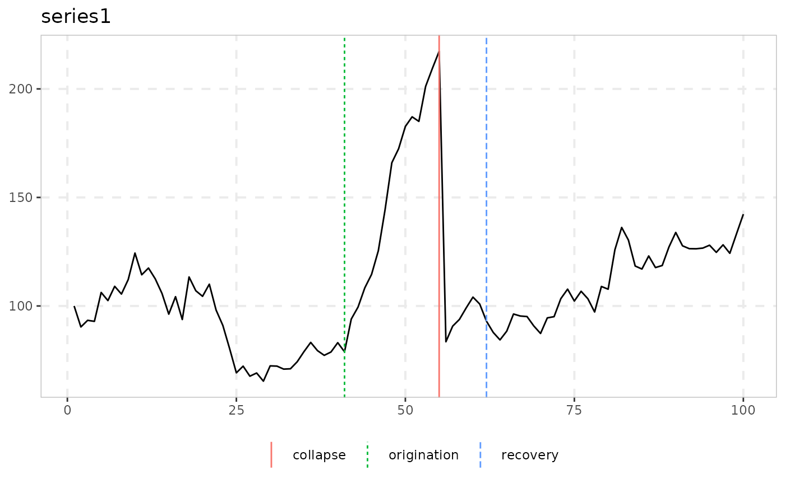

Naming Conventions and the Analysis/Tidying/Plotting Pipeline
Source:vignettes/naming-and-analysis.Rmd
naming-and-analysis.RmdWhy this exists
exuber started as one test (radf(), the
recursive ADF/SADF/GSADF/BSADF statistic of Phillips, Shi & Yu 2015)
and grew, through a long research programme, into roughly 25 functions
covering a dozen papers’ worth of related-but-distinct methodology:
alternative tests, dating procedures, monitoring schemes, root
inference. Every one of them used to be named
radf_<something>(), which was accurate for some and
misleading for others – a radf_ prefix reads as “this is a
recursive-ADF statistic,” but several of these functions are not that at
all. This vignette documents the naming scheme that replaced it, and –
more usefully – which functions can actually be plugged into the shared
summary()/datestamp()/tidy()/autoplot()
pipeline built for radf(), and which have their own,
differently-shaped output instead.
The naming scheme
| Pattern | Means | Examples |
|---|---|---|
radf_ prefix |
Genuinely built on the recursive-ADF core: calls radf()
directly, or reuses its badf/bsadf
recursion |
radf(), radf_tt(),
radf_sign(), radf_common(),
radf_kp(), radf_recovery(), and the
_cv/_mc/_sb/_wb
critical-value engines |
_test suffix |
A standalone hypothesis test with its own null distribution, not built on the recursive-ADF core |
lbi_test(), ssu_test(),
quantile_test(), cobubble_test()
|
dating_ prefix |
Point-estimation / model-selection dating, no formal hypothesis test at all |
dating_hls(), dating_hlw(),
dating_knp(), dating_pdc()
|
monitor/monitor_ prefix |
Real-time/sequential detection – grouped by what it does,
not by internal mechanism. monitor() is this family’s
flagship, the same role radf() plays for the
radf_ family: it reuses
badf/bsadf directly (genuinely ADF-family
internals) but carries no radf/sadf token at
all, specifically so it reads as “the real-time monitor,” not as a
radf_ variant – see below |
monitor(), monitor_cusum(),
monitor_lbi(), monitor_quantile()
|
root family |
Confidence-interval inference on the magnitude of the
explosive root, not a test for its presence
(exuber_functions(family = "root"); no shared prefix) |
rootstamp() (two S3 methods: default for a single
sub-sample, radf_obj to run every datestamp()
episode at once) |
| stands alone | A point-estimation tool, not a test | contagion_reg() |
Naming prefixes are a convention, not a contract – they’re easy to
misremember and, as monitor() shows, sometimes trade off
against each other (grouped with its fellow monitors under a name that
deliberately doesn’t advertise its ADF-family internals, so it can’t be
mistaken for a radf_*() variant). For anything
programmatic, don’t parse function names: call
exuber_functions(), which returns the same categorization
as actual, queryable data.
exuber_functions(family = "monitor")
#> # A tibble: 4 × 3
#> name family description
#> <chr> <chr> <chr>
#> 1 monitor adf,monitor Real-time monitoring (Family A); reuses radf()'s…
#> 2 monitor_cusum monitor CUSUM/CUSUMV real-time monitoring, closed-form b…
#> 3 monitor_lbi monitor Sequential extension of lbi_test(), constant-bou…
#> 4 monitor_quantile monitor QPWY recursive quantile-regression monitoring, e…Two names that look related but aren’t: the dating_*()
family above are standalone SSR/BIC procedures called directly on raw
data – they take no critical value at all. datestamp() (see
below) is a different thing entirely: the generic that applies PSY’s own
threshold-crossing rule to any radf_obj +
radf_cv pair.
One exception to “datestamp() always needs a
radf_cv”: datestamp(object, option = "svadf")
runs Sarkar & Wells (2026)’s asymmetric-threshold dating directly
off object$badf, no critical value at all – see
vignette("experimental-methods").
What actually plugs into
summary()/datestamp()/tidy()/autoplot()
These four generics are built around one shape: a
radf_obj (from radf()) paired with a
radf_cv that carries a time-varying
boundary (badf_cv/bsadf_cv, one critical value
per recursion point) as well as the three scalar sup-statistic critical
values (adf_cv/sadf_cv/gsadf_cv).
Only functions whose result actually carries the radf_obj
class – and whose paired _cv() actually computes that
time-varying boundary – get the full pipeline. Three tiers, in
practice:
Full support: radf_common(), radf_kp(),
radf_tt(), radf_sign(),
radf_sign_dm(), radf_sbz()
radf_kp()/radf_common() literally return
radf()’s own output (purged of volatility, or computed on a
PCA factor, respectively, then radf() unmodified), so every
generic works exactly as it does for plain radf(). The
running series for this whole section is the one these tests are built
for – sim_psy1()’s bubble with a permanent volatility break
(sim_vol_break(), innovation standard deviation tripling
half-way through), see
vignette("volatility-robust-radf"):
y <- sim_psy1(n = 200, seed = 1, e = sim_vol_break(199))
res <- radf_kp(y, minw = 20)
cv <- radf_mc_cv(n = attr(res, "n"), minw = 20)
summary(res, cv = cv)
#>
#> ── Summary (minw = 20, lag = 0) ────────────────── Monte Carlo (nboot = 1000) ──
#>
#> series1 :
#> # A tibble: 3 × 5
#> stat tstat `90` `95` `99`
#> <fct> <dbl> <dbl> <dbl> <dbl>
#> 1 adf -1.72 -0.328 0.00172 0.572
#> 2 sadf 1.50 1.19 1.48 1.97
#> 3 gsadf 2.63 1.99 2.27 2.87
datestamp(res, cv = cv)
#>
#> ── Datestamp (min_duration = 0) ───────────────────────────────── Monte Carlo ──
#>
#> series1 :
#> Start Peak End Duration Signal Ongoing
#> 1 90 95 105 15 positive FALSE
#> 2 106 106 109 3 positive FALSE
#> 3 141 141 142 1 positive FALSE
#> 4 145 146 147 2 negative FALSE
tidy(res, cv = cv)
#> # A tibble: 1 × 4
#> id adf sadf gsadf
#> <fct> <dbl> <dbl> <dbl>
#> 1 series1 -1.72 1.50 2.63
autoplot(res, cv = cv)
The other three are different: they carry the radf_obj
class but build their statistic on gls_dfstat_grid() (a
no-intercept, GLS-demeaned recursive-DF grid, fed the raw series for
radf_tt(), its cumulated sign for radf_sign(),
a recursively demeaned cumulated sign for radf_sign_dm())
rather than calling radf() directly. Until 2026-08-18 all
three had a real gap: their _cv() functions only ever
computed the three scalar critical values
summary()/tidy() need, discarding the
badf/bsadf path gls_dfstat_grid()
already computes per replicate, so
datestamp()/autoplot() (which need a
time-varying boundary) always errored. Fixed for all three the
same way, once the pattern was confirmed in radf_tt_cv()
first and then checked to hold for the other two as well: unlike
radf_mc_cv()’s own bsadf_cv (a
cummax()-across-replicates shortcut around the base C++
engine’s output shape), gls_dfstat_grid()’s
bsadf is already the genuine sup-over-all-window-starts
statistic at each point, so no shortcut derivation was needed – just the
per-time-point quantile across replicates, the construction
radf_mc_cv() uses for its own bsadf_cv.
Validated per function: badf_cv’s last row is bit-identical
to adf_cv (adf is literally
badf’s last point, per replicate – a hard identity, not an
approximate check, and true regardless of which series feeds
gls_dfstat_grid()); empirical false-alarm rate under
H0 is at or below nominal (radf_tt 3.3%,
radf_sign 5.5%, radf_sign_dm 3.5%, all at
nominal 5%, n=100, minw=20); and detection power on an identical
synthetic bubble is in the same range as the established
radf()/radf_mc_cv() baseline (16%) rather than
suspiciously higher or lower (radf_tt 18%,
radf_sign 20%, radf_sign_dm 8% – the
sign-based tests trading power for their heteroskedasticity invariance
is itself the paper’s own documented finding, not a validation red
flag).
res <- radf_tt(y, minw = 20)
cv <- radf_tt_cv(n = 200, minw = 20)
summary(res, cv = cv)
#>
#> ── Summary (minw = 20, lag = 0) ────────── Time-Transformed MC (nboot = 2000) ──
#>
#> series1 :
#> # A tibble: 3 × 5
#> stat tstat `90` `95` `99`
#> <fct> <dbl> <dbl> <dbl> <dbl>
#> 1 adf -0.997 0.832 1.26 2.04
#> 2 sadf 3.27 2.32 2.66 3.32
#> 3 gsadf 4.23 3.26 3.65 4.38
datestamp(res, cv = cv)
#>
#> ── Datestamp (min_duration = 0) ───────────────────────── Time-Transformed MC ──
#>
#> series1 :
#> Start Peak End Duration Signal Ongoing
#> 1 21 38 89 68 negative FALSE
#> 2 148 148 150 2 positive FALSE
tidy(res, cv = cv)
#> # A tibble: 1 × 4
#> id adf sadf gsadf
#> <fct> <dbl> <dbl> <dbl>
#> 1 series1 -0.997 3.27 4.23
autoplot(res, cv = cv)
res <- radf_sign(y, minw = 20)
cv <- radf_sign_cv(n = 200, minw = 20)
summary(res, cv = cv)
#>
#> ── Summary (minw = 20, lag = 0) ──────────────── Sign-Based MC (nboot = 2000) ──
#>
#> series1 :
#> # A tibble: 3 × 5
#> stat tstat `90` `95` `99`
#> <fct> <dbl> <dbl> <dbl> <dbl>
#> 1 adf -0.293 0.932 1.35 2.14
#> 2 sadf 4.47 2.43 2.78 3.26
#> 3 gsadf 8.88 3.46 3.88 4.98
datestamp(res, cv = cv)
#>
#> ── Datestamp (min_duration = 0) ─────────────────────────────── Sign-Based MC ──
#>
#> series1 :
#> Start Peak End Duration Signal Ongoing
#> 1 84 84 85 1 positive FALSE
#> 2 87 103 122 35 positive FALSE
#> 3 123 123 124 1 positive FALSE
tidy(res, cv = cv)
#> # A tibble: 1 × 4
#> id adf sadf gsadf
#> <fct> <dbl> <dbl> <dbl>
#> 1 series1 -0.293 4.47 8.88
autoplot(res, cv = cv)
radf_sbz() is a fourth, separate case: it builds its
statistic (supBZ) on wls_dfstat_grid(), a
WLS/kernel-volatility-weighted no-intercept recursive-DF grid, not
gls_dfstat_grid() – but the same fix applies for the same
reason, since wls_dfstat_grid() already returns the full
badf/bsadf path per replicate.
radf_sbz_cv()’s wild bootstrap is therefore built the same
way as radf_tt_cv()/radf_sign_cv()’s Monte
Carlo simulation: per-time-point quantile across replicates, no
cummax() shortcut needed. Validated the same way:
badf_cv’s last row is bit-identical to adf_cv;
empirical false-alarm rate under H0 is 5.0% at nominal 5%
(n=100, minw=20, 200 replications); and it does reject on a sufficiently
strong deterministic explosive path, though its kernel-volatility
weighting trades away enough power on sim_psy1()’s default,
milder bubble that it doesn’t reject on the series above at
nboot=100-200 – the same power/robustness trade-off already documented
for radf_sbz_union()’s supBZ leg below, not a
new finding specific to the split.
res <- radf_sbz(y, minw = 20)
cv <- radf_sbz_cv(y, minw = 20, nboot = 200, seed = 1)
summary(res, cv = cv)
#>
#> ── Summary (minw = 20, lag = 0) ────────── Wild Bootstrap (SBZ) (nboot = 200) ──
#>
#> series1 :
#> # A tibble: 3 × 5
#> stat tstat `90` `95` `99`
#> <fct> <dbl> <dbl> <dbl> <dbl>
#> 1 adf -1.39 0.825 1.13 1.61
#> 2 sadf 1.67 1.58 2.11 3.36
#> 3 gsadf 1.91 3.37 5.06 6.21
tidy(res, cv = cv)
#> # A tibble: 1 × 4
#> id adf sadf gsadf
#> <fct> <dbl> <dbl> <dbl>
#> 1 series1 -1.39 1.67 1.91datestamp()/autoplot() need at least one
rejection to have anything to show (they error otherwise, same as for
any other radf_obj/radf_cv pair) – the series
above doesn’t clear supBZ’s bar, so here’s the same
volatility break under a stronger, uncollapsed explosive regime
(rho = 1.03 from t = 120 to the sample end),
which does:
y_strong <- sim_psy1(n = 200, te = 120, tf = 200, c = 0.03, alpha = 0, seed = 1,
e = sim_vol_break(199))
res2 <- radf_sbz(y_strong, minw = 20)
cv2 <- radf_sbz_cv(y_strong, minw = 20, nboot = 100, seed = 1)
datestamp(res2, cv = cv2)
#>
#> ── Datestamp (min_duration = 0) ──────────────────────── Wild Bootstrap (SBZ) ──
#>
#> series1 :
#> Start Peak End Duration Signal Ongoing
#> 1 128 129 130 2 positive FALSE
#> 2 132 134 135 3 positive FALSE
#> 3 172 200 200 29 positive TRUE
autoplot(res2, cv = cv2)
Own print() and autoplot(): everything
else
The remaining ~15 functions (lbi_test(),
ssu_test(), quantile_test(),
cobubble_test(), the dating_*() family, the
monitor()/monitor_*() family (including
monitor() itself, ADF-family internals notwithstanding –
see above), contagion_reg(), radf_recovery(),
rootstamp(), radf_sbz_union()) each return
their own class with their own print() and
autoplot() methods, because their output genuinely doesn’t
fit the radf_obj shape – a dating table isn’t a per-series
sup-statistic, a monitoring alarm isn’t a critical value grid. Trying to
force them through
summary()/datestamp()/tidy()
isn’t a documentation gap to close; the right call is their own
presentation, shown directly:
rootstamp() is the one exception worth flagging: it’s
grouped under Analysis in the reference index and the README’s
workflow list, right after datestamp(), since that’s
genuinely where it belongs in the sequence of steps (detect →
date → measure growth rate) – but that’s a workflow position, not an
S3-support tier. It’s still its own class with its own
print() and autoplot() methods, same as
everything else in this section; see
vignette("root-inference").
dating_hls(sim_data$psy1, trim = 0.05)
#>
#> ── dating_hls (n = 100, trim = 0.05) ───────────────────────────────────────────
#>
#> series model origination collapse recovery
#> series1 4 41 55 62
ssu_test(sim_data$psy1, sig_lvl = 95)
#>
#> ── ssu_test (n = 100, minw = 19, sig_lvl = 95%, crit = 3.3) ────────────────────
#>
#> series sadf detected
#> series1 4.251 TRUE
autoplot(dating_hls(sim_data$psy1, trim = 0.05))
Summary
| Tier | Functions | summary() |
datestamp() |
tidy() |
autoplot() |
|---|---|---|---|---|---|
| Full |
radf(), radf_common(),
radf_kp(), radf_tt(),
radf_sign(), radf_sign_dm(),
radf_sbz()
|
yes | yes | yes | yes |
| Standalone | everything else | own print()
|
– | – | own method |